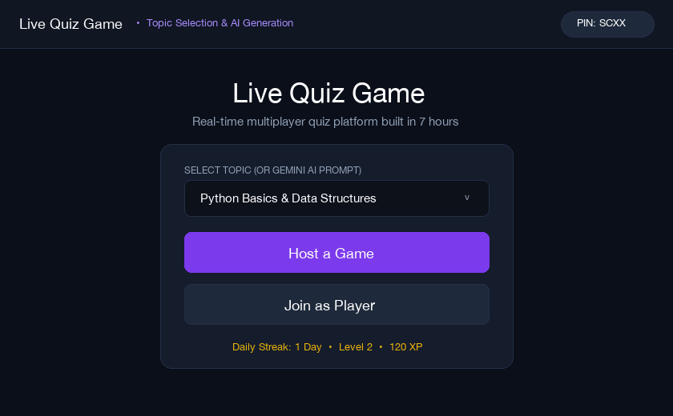

Gameplay Walkthrough: Topic Selection, Host Lobby, Instant QR Join, Authoritative Timer, & LeaderboardsLive Interactive Educational Game
A real-time multiplayer quiz platform shipped in under 7 hours at MLH Hack Day @ CityTech, supporting instant player joins via QR/room codes and dynamic score leaderboards.
Read Case Study ▼
Problem
Classroom and hackathon trivia tools often demand cumbersome account creation or suffer from noticeable state lag between host projector displays and mobile player phones. The challenge was building and shipping a lag-free, instant-join multiplayer game within an intense 7-hour hackathon window.
My Role & Architecture
Full-stack architect & real-time systems lead. Designed the Node.js/Express server, configured Socket.IO room lifecycle orchestration, defined end-to-end TypeScript data contracts, and integrated the Google Gemini API for automated prompt-to-quiz generation.
Hard Bug & Tradeoff
Tradeoff: Disallowed clients from running local timers or calculating score increments to prevent race conditions and tampering; centralized all transitions in a server tick state machine (Lobby → Question → Reveal → Leaderboard → Podium). Hard Bug: Rapid phase shifts caused out-of-order WebSocket packet delivery on mobile browsers. Fixed by attaching monotonic state sequence numbers and broadcasting synchronized server timestamps so client countdowns stayed frame-accurate.
Result
Successfully shipped and live-demoed before judges at MLH Hack Day @ CityTech with zero state desync errors, supporting multiple concurrent players joining via QR codes/PINs, dynamic score streaks, and animated podium celebrations.
What I'd Do Differently
Add a Redis pub/sub adapter to scale the Socket.IO server horizontally across multiple instances, and cache generated trivia in a KV store to eliminate LLM generation latency during high traffic.